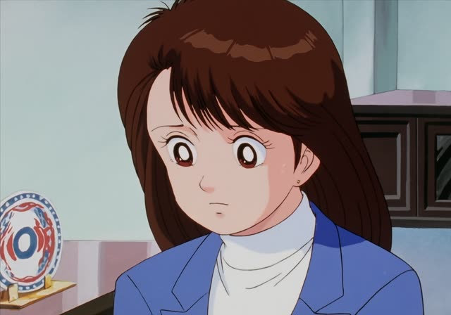
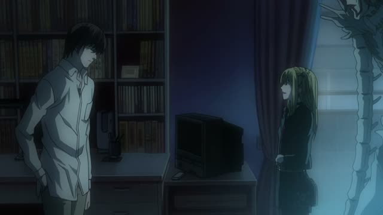
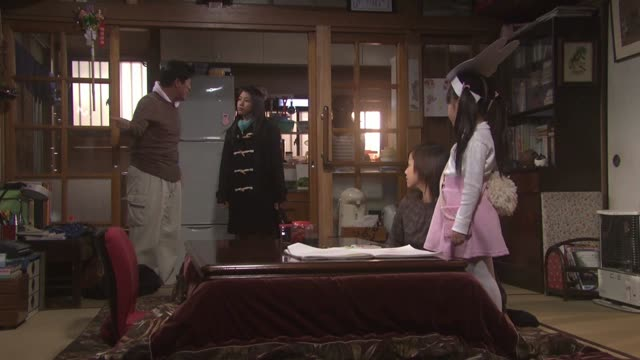

～ておく
| Polite | ～ておきます |
|---|---|
| Casual | ～ておく・～とく とく is the everyday spoken form |
Same meaning: "do it now, ready for later" or "leave it that way". Only the politeness changes.
Vinland Saga · Episode 3
はい、伝えておきます。
"Yes, I'll pass it on."
～ておく means "do it now, so it's done for later". て-form + おく: 伝えておく. In speech it shrinks to とく: 言っておく → 言っとく.
On this card, someone asks Leif to pass on a message, and he promises to. ておきます: he'll make sure it's done. ます makes it polite.
It can also mean "leave it as it is": そのままにしておく.
Slam Dunk · Episode 50
よう、１つだけ言っとくぜ、桜木。
"Hey, let me tell you one thing, Sakuragi."
On this card, a rival from Kainan warns Sakuragi before the game. 言っとく = 言っておく: "I'm saying it now, so you know".
Quick Examples
Before guests arrive.
ビールを冷やしておきます。
"I'll put the beer in the fridge."
Getting ready for later.
PoliteYour roommate is going out.
窓、開けとくね。
"I'll leave the window open."
とく = ておく.
CasualPlanning a trip.
ホテルを予約しておいたよ。
"I booked the hotel already."
CasualA coworker asks you to remember.
覚えておきます。
"I'll keep it in mind."
PoliteWith and without
ホテルを予約した。
"I booked the hotel."
ホテルを予約しておいた。
"I booked the hotel (ahead of time, so we're ready)."
Examples from Media

Oishinbo · Episode 12
はい、これから注意しておきます。
"Yes, I'll keep an eye out from now on."
Death Note · Episode 10
もう一度説明しておきますが
"Let me go over it once more"

Death Note · Episode 15
いや、電源は切っておく。
"No, I'll keep the phone switched off."
Dungeon Meshi · Episode 3
あとは定番もやっておくか。
"I'll do the classic one too, while I'm at it."

1 Litre of Tears · Episode 8
ちょっと、鍋洗っといてくんねえか？
"Hey, could you wash the pot for me?"
洗っといて = 洗っておいて.
Spirited Away
ここに置いといていいの？
"Is it okay to leave it here?"
Goblin Slayer · Episode 4
覚えておこう。
"I'll remember that."
Goblin Slayer, flatly.
Shirokuma Cafe · Episode 10
僕が桐野くんに頼んでおいたから。
"Because I asked Kirino ahead of time."